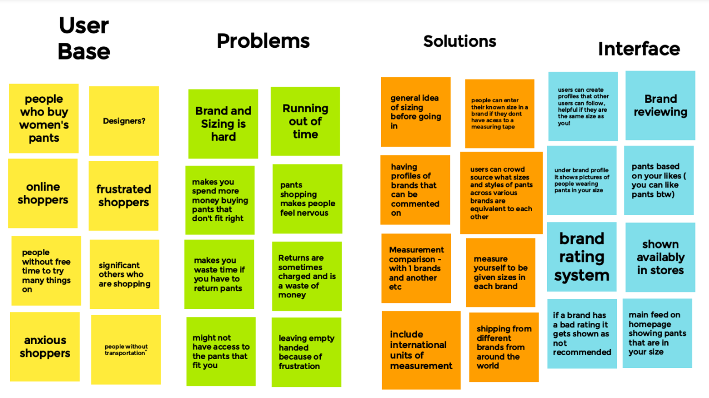
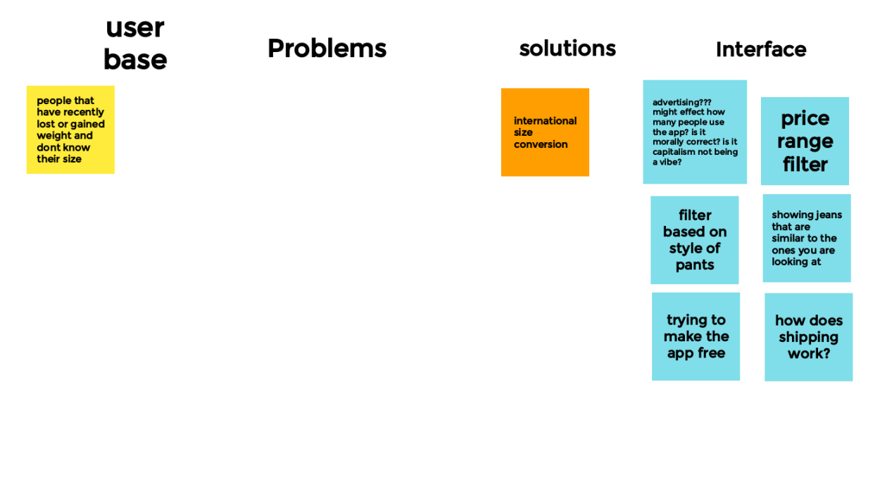

Problem Statement: Women Pants
It’s not uncommon to hear complaints about the design of women’s clothing, the most common grievance being that jeans in the same size from different brands don’t fit. This creates an annoying guessing game of sizes when the measurements should be standardized. A database of jean sizes and their equivalencies across various brands will save time, effort, and tears in the dressing room.

